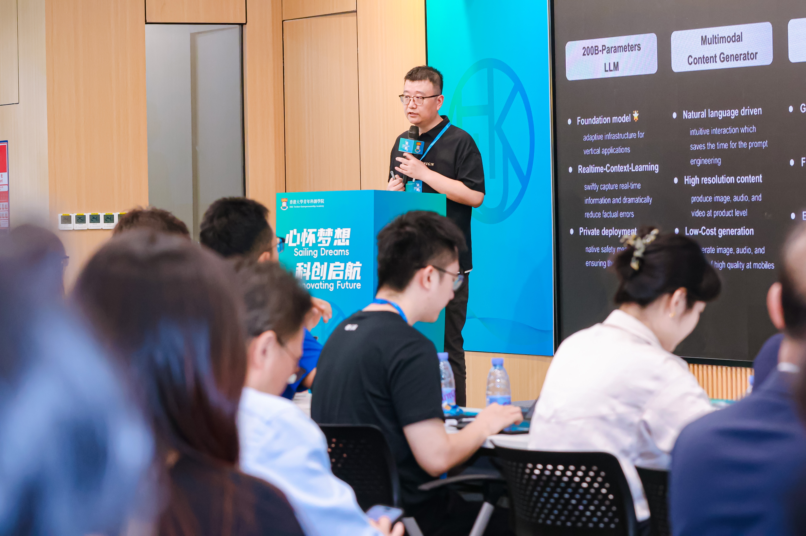

Liam's Homepage
|
Liam Ning Ph.D. (CS, for Computer Science); B.sc. (CS, for Computing Science) CTO and co-founder of Stellaris AI (released 200B LLM - SGPT on May 2023) || AI Content Creator || Al Enthusiast || AI Researcher || Expert on Distributed AI & High-Performance Computing & AI Infrastructure |
Welcome
Throughout our journey in researching and developing advanced AI models and applications, we've encountered numerous exciting ideas and insights that, while intriguing, didn’t quite fit into our current work plan. I believe it’s valuable to share these ideas to create more opportunities for connecting with others who are passionate about AI. This motivation has driven me to actively (or, at least, I hope so) maintain this website as a platform for sharing interesting insights on AI, particularly in the areas of LLMs and AIGC, as well as practical notes that may benefit fellow AI researchers and developers. Feel free to connect with me directly on X, LinkedIn, or YouTube.
Consultation
As the landscape of artificial intelligence continues to evolve, large language models (LLMs) stand at the forefront of innovation. Our consultation services are designed to guide organizations in harnessing the full potential of LLMs for diverse applications, from automated content generation to data-driven decision-making. Whether you are looking to integrate LLMs into your products, streamline workflows, or advance cutting-edge research, we offer tailored strategies to navigate this complex and rapidly advancing field with precision and efficiency. For those interested in exploring how LLMs can transform your business, feel free to reach out to me on LinkedIn.
Top Posts (more…)
Nov. 24th: The Potential of Applying LLMs in the Generation and Evaluation of Financial Documents. (more…)
Latest News (more…)
Dec. 9th: Demo presentation in Cyberport’s AISC & AI Lab Opening Ceremony. It's great to become the partner of Cyberport's AI Lab.
Nov. 23rd: SGPT, the first and only one hundreds-billions-parameters LLM, the work based on our collaboration with HKU, was introduced in TVB News.


Sep. 24th: Receive SUAT delegation in HKU CS Department. (SUAT News)

Sep. 10th: Demo show as member of Hong Kong delegation in The 2024 National Cybersecurity Awareness Week (Guangzhou).
Aug. 26th: Presentation in HKU Techno-Entrepreneurship Academy Grand Opening. (Qianhai News)

Jul. 4th – Jul. 7: Show in WAIC 2024, China.

Jun. 4th: Speak in SIAT, CAS. (SIAT News)